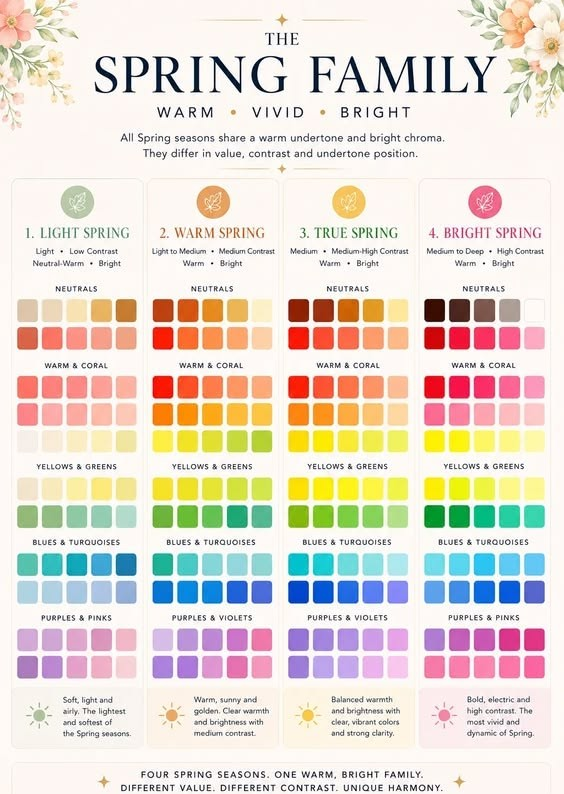
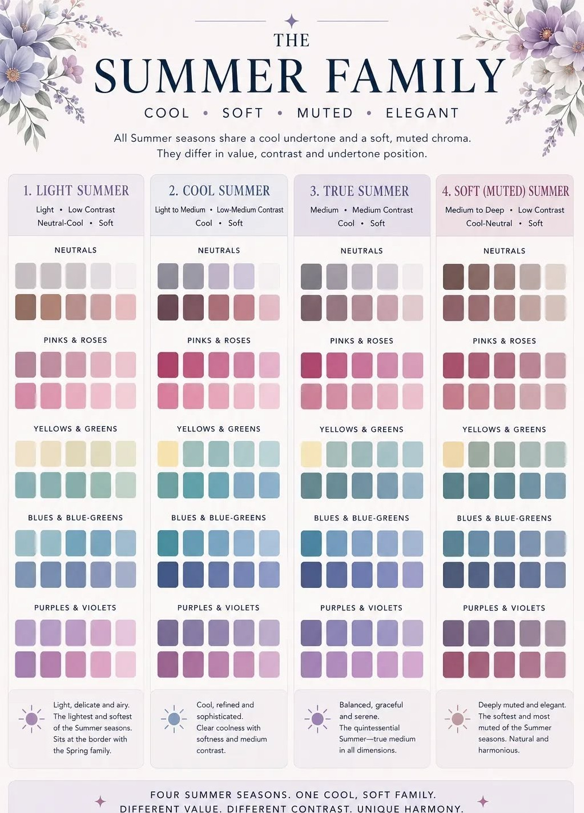
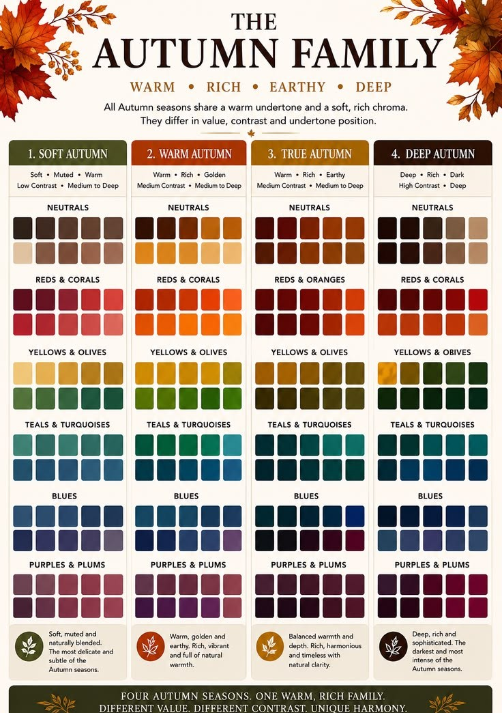
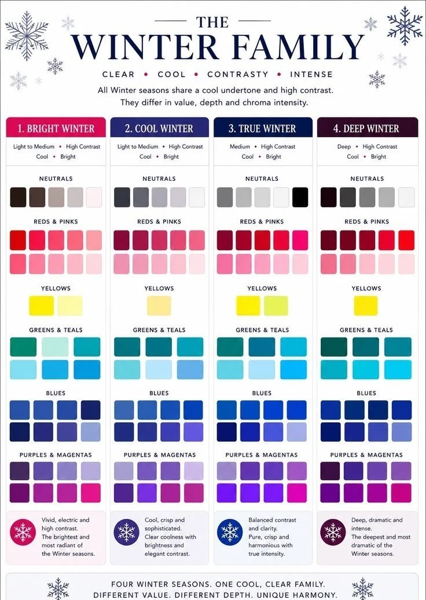
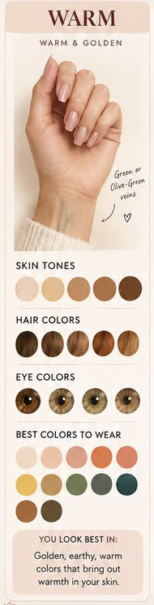
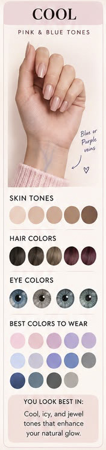
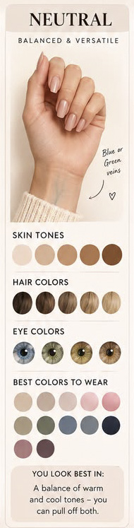
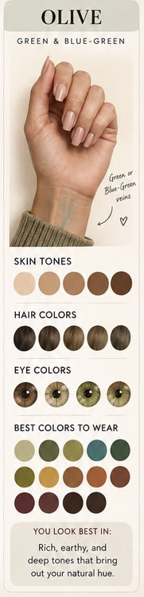

Миний веб хуудсанд тавтай морил!
Арьсны өнгө, үс, нүдний өнгөндөө тохирсон хувийн өнгөний палитраа олж, өөртөө зохицох өнгөнүүдийг нээгээрэй. Карт бүрийг эргүүлж тайлбарыг нь уншаарай.
Улирлуудыг үзэхӨнгөний 4 улирал
-

Хавар -

Зун -

Намар -

Өвөл
Ундертон гэж юу вэ?
Ундертон нь арьсны гадаргуугийн доорх суурь өнгө бөгөөд улирлаас тусдаа ойлголт. Ундертоноо мэдвэл алт эсвэл мөнгө, ямар өнгө илүү зохицохыг тодорхойлоход хялбар.
-

Дулаан -

Хүйтэн -

Төвийг сахисан -

Olive